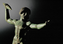
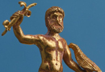
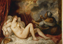
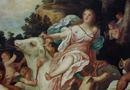

Zeus
Zeus is the god whose origins are perhaps clearest. He is the sky god a meaning that is embedded in his name. His name bears similarities to the Indic sky god Dyaus pitar (father sky) and the Roman Jupiter (Diespiter), who in literature is most often treated as the equivalent of the Greek Zeus. If one is to be more exact, one might refer to Zeus as the sky father, as he is often called in Homer (Zeus, pater). He is also, as we will see, a weather god and a storm god. He has several Homeric epithets (an adjective indicating a particular quality or characteristic) that attest to his power as a weather god. He is called ‘cloud-gatherer’, ‘the dark clouded’, and he is famously the hurler of thunderbolts. (see images 1-2) We also know that Zeus was connected with weather in prayer; a later prayer beseeches Zeus to bring rain, much as we might imagine a ‘rain-dance’ in certain modern cultures. Even less obvious epithets such ‘aegis-bearing’ could connect him with weather. It is in fact uncertain what this adjective (in Greek ‘aigioxios’) means, for etymologically it seems to be connected with ‘goat’ (‘aigis’ meaning goat in Greek). And, Zeus is connected with goats in mythology. In one story of his birth he is suckled by the goat Amalthea, or fed her milk by nymphs. This connection may be significant when one considers that in German lore a coming storm is presaged by the flight of a snipe bird that is called ‘Heaven’s Goat’. The snipe, as it flies through the air, produces a bleating sound much like that of a goat which is also connected with the sound of thunder. In ancient Greek too, ‘goat’ was the name of a bird, and it may therefore be possible to connect this epithet of Zeus to his role as a weather god. Furthermore, Zeus lives in the mountains, amongst the clouds where storms gather, for example on Mt. Ida, in the Troad in northern Asia Minor. This site is famous in the Iliad, and it was there in book 14 of the poem that Zeus sleeps with Hera: he wraps them both in a cloud so that they can’t be seen by the other gods.
{kind=link}
{kind=link}
As we saw in Hesiod, Zeus is the established ruler of the gods, and nobody can defeat him. This is a fact of which he is very much aware. At the beginning of the 8th book of the Iliad, Zeus puts his superiority to the gods in the following way:
Come, try me immortals, so all of you can learn.
Hang a great golden cable down from the heavens.
lay hold of it, all you gods, goddesses too:
you can never drag me down from sky to earth,
not Zeus, the highest, mightiest, king of kings,
not even if you worked yourselves to death.
But whenever I’d set my mind to drag you up,
in deadly earnest, I’d hoist you all with ease,
you and the earth, you and the sea, all together,
then loop that golden cable round a horn of Olympus,
bind it fast and leave the whole world dangling in mid-air—
that is how far I tower over the gods, I tower over men.’
The Greeks understood Zeus in two main ways; as a powerful god who wielded the thunder-bolt, and as a king seated on a throne, as we will see him at the temple of Olympia. One aspect of Zeus’ position as the most powerful of all gods is his role as the god of victory. After a great military battle at Plataea in 479 B.C.E., in which the Greeks were united and victorious against the Persians, a sanctuary was set up for Zeus Eleutherios, or ‘Zeus the liberator’. An inscription of the 5th century B.C.E. also reveals his power as a god of victory: Thanks to these gods the Selinuntioi are victorious: thanks to Zeus we are victorious and thanks to Terror and thanks to Heracles and thanks to Apollo and thanks to Poseidon and thanks to the Tyndaridai and thanks to Athena and thanks to Malophoros and thanks to the All Vanquishing and thanks to other gods, but thanks to Zeus most of all. Here, Zeus’ position as the most powerful of the gods is honoured. Similarly, there were many dedications of statues and weapons at the sanctuary of Zeus in Olympia for victory in battle.
Another way in which Zeus can be seen to be the most powerful of the gods in the Greek pantheon is in his sexual power. His sexual exploits and his dominance in that arena are truly legendary. It would take a very long time to list all of the children whom he is supposed to have sired and I will not do so, but Heracles and Sarpedon (the son whom he loses in the Iliad and whom we will look at when we read the Iliad) are good examples of the strength of son he produces. He was said by later mythographers to have slept with one hundred and fifteen women. He is of course married to Hera, and is expected to be the archetypal husband to her, but he also has the freedom to do what he likes in the realm of love; it is frequently the case that Hera is angry and jealous at his affairs, but this does not stop him. Zeus is both husband to Hera, but also the ideal lover; this latter trait often contradicts his role as husband, and he can at times be comically insensitive. In book 14 of the Iliad, Zeus wants Hera to come and sleep with him and tries to win her over with the following words:
‘Come, let us to bed and the delights of love. Never has such desire, for goddess or mortal, flooded and overwhelmed my heart; no, not when I loved Ixion’s wife who bore Peirithous, wise as the gods; or Danae of the slim ankles, daughter of Acrisius, who gave birth to Perseus, the greatest hero of his time; or the far-famed daughter of Phoenix, who bore me Minos and godlike Rhadamanthus; or Semele, or Alcmene in Thebes, whose son was lion-hearted Heracles, while Semele bore Dionysus, mankind’s delight; or lady Demeter with her lovely hair, or incomparable Leto; or you yourself – never have I felt such desire for you, or has such sweet longing overwhelmed me.’
It is difficult to think of a more insensitive approach to wooing a lover, let alone one’s wife, than be listing at length one’s conquests in order to emphasize that one has never felt more passionate! This is an obviously humorous moment.
More important, perhaps, is the fact that it is only the children of Zeus who become powerful gods, some of them being major players in the Greek pantheon. Zeus is the father of Apollo and Artemis by Leto, Hermes by Maia, Persephone by Demeter, Dionysos by Semele, and Athena from his own head. He also has his way with any mortal woman or man he should want. One of the most famous abductions in literary history is that of Ganymedes by Zeus, a mortal who was taken to heaven to be Zeus’ lover and a consort of all of the gods. This abduction is recounted in the Homeric Hymn to Aphrodite which we will read later in this course (see M&L 202). Compared to many modern societies, ancient Greece was very open to homosexuality, and homosexual affairs are frequently recounted in ancient mythology.
Let’s now look at three examples of Zeus’ affairs with women. First, is his affair with Danae. Danae is the daughter of the king of Argos Acrisius. An oracle foretells Acrisius that his daughter will give birth to a son who will kill him, and so he has her locked up in an underground room where nobody will be able to get to her. No locked room, however, is going to stop Zeus; he enters the room as a shower of gold and sleeps with her. (see image 3) The child of the union was the famous Argive hero Perseus, whom we will examine in detail later in the course when we consider Argive saga; Acrisius sets his daughter and Perseus afloat on the sea, refusing to believe that Perseus is the son of Zeus. Here we see Zeus actually change his form in order to lie with Danae, as he frequently does in mythology.
{kind=link}
Another of his most famous forms is that of a bull, and it is as a bull that he seduces Europa. (see image 4) Zeus disguises himself as a bull and takes Europa across the sea from Asia to Crete. Ovid gives us the following description of the affair in his Metamorphoses 2–3: ‘Agenor’s daughter [Europa] wondered at the bull’s beauty, amazed that he did not threaten to attack, yet, gentle as he seemed, she at first was afraid to touch him. After a while she came up close and offered flowers to his white face. The young princess even dared to sit upon the bull’s back. Then the god little by little began to take his deceptive steps further from the dry land into the sea, then he went further and carried his prey across the central water of the sea. At length he laid aside the disguise of the deceiving bull and revealed who he was and reached the shores of Crete.’ (translation M&L 408–9). Europa, who comes to represent the continent of Europe, passes from the Asian continent and gives birth to king Minos in Crete. His wife Pasiphae later gives birth to the Minotaur, a myth that we will examine later in the course (the element of the bull runs in the mythological family history).
{kind=link}
A third of Zeus affairs is that between Zeus and Io (see M&L 96–8) which causes Hera to become very angry. Here again we encounter the theme of changing into a bull, but now as a punishment. Io was a priestess of Hera, with whom Zeus falls madly in love. He runs off with her into the forests, but Hera is jealously keeping a close eye on Zeus. She follows him. This story is told in Aeschylus’ Prometheus Bound, where Io tells Prometheus of her suffering. In that version of the story, Hera discovers the affair and turns Io into a white heifer as punishment. She then places her under the guard of the snake Argus who always has an eye open, so that Zeus could not change her back (Hermes is sent to slay the snake, and this is why he is often called Hermes Argust-slayer). A particularly significant element in this story is the theme of Hera’s jealousy and anger at Zeus’ affair, a motif which occurs frequently in Classical mythology. The story is told also by Ovid in his Metamorphoses, where Zeus himself turns Io into a white heifer in the hope of deceiving Hera, who then slyly asks Zeus to give her the heifer as a gift and puts Io under the protection of Argus.
In these myths we see the power of Zeus to do as he pleases, tricking his wife by pursuing women behind her back. As in other areas of his power, he uses both physical strength and cunning to achieve what he desire. But does Zeus have any limitations? We have seen that Zeus boasts about his strength to the other gods, but he must also at times act in accordance with fate, as it has been ordained. In this sense, Zeus can be seen at times in literature as an impartial god who must give out to the world what fate has determined is correct. He must, for example, in Homer’s Iliad (book 16) decide whether to save his son Sarpedon against the wishes of fate, or abandon his son to death as fate has ordained. At the prompting of Hera, he, even the most powerful of gods, gives way to fate, an abstract force that is not clearly defined in early Greek mythology (see M&L 481–2). This connection with giving out justice in an impartial way can also be seen in the Iliad when Hector and Achilles meet in their final duel in book 22: Zeus holds up his famous golden scales, whose tipping shows that Hector must die. Again, Zeus holds the scales, but he acts not entirely of his will.
If we turn to religious practice in Greece, Zeus was worshipped with respect to justice and council in cities. He is sometimes known as Zeus Boulaios, or Zeus who gives council; it is often said in Greek literature that kings are nourished by Zeus, as leaders of the people. He is elsewhere known as Zeus Polieus, connected with the city (the Greek word being polis) and thereby again with order; he also is at times Zeus Herkeios or Zeus Ktesios, the protector of the courtyard and possessions respectively. All of these titles indicate particular functions of Zeus as a protector and dispenser of justice in every day life. In Hesiod’s Theogony, the goddess Dike (the female personification of justice) is the daughter of Zeus.
There was no long Homeric Hymn to Zeus, but the short 23rd hymn to the father of the gods reads: ‘I will sing of Zeus, chiefest among the gods and greatest, all-seeing, the lord of all, the fulfiller who whispers words of wisdom to Themis as she sits leaning towards him. Be gracious, all-seeing Son of Cronos, most excellent and great!’ In this hymn we see emphasized Zeus’ connection with Themis, the personification of what is just and right, and Zeus sister. Another of his religious titles Agoraios is a further example of how he is seen as presiding over the political and the commercial life of the community. He is often, therefore, connected with gods at the heart of the city centre, such as Athena, or Hestia, the hearth of the city.
In other incarnations, Zeus oversees the relations between strangers and supplicants; as Zeus Xenios and Zeus Hikesios, he looks after guests and strangers who are visiting foreign lands, and those who take refuge. It is often said throughout Homer’s Odyssey and in later Greek literature that one must be kind to strangers, otherwise one might incur the wrath of Zeus.
Importantly, Zeus is always seen as above the other gods. This had its effect upon how he was portrayed in Greek literature. We see him described in the narratives of Homer’s Iliad and the Odyssey, but it is interesting that he is not ever depicted on stage in tragedy (apart from one disputable case): Athena, Apollo, Artemis, Aphrodite, Hera and Dionysus all make personal appearances on the tragic stage in the 5th century in Athens. He is mentioned throughout tragedy as the most powerful god, but he is always in the background, overseeing what is happening, rather than on-stage.
It is not surprising in this light that Zeus is also a god of prophecy. One of the most famous Greek oracles was an oracle of Zeus, Dodona in Epirus, in North-Western Greece. It was said to be the oldest Greek oracle (older even than the famous oracle of Apollo in Delphi), and is mentioned in Greek literature from the time of Homer onward. He was there said to show himself in the sounds of a holy oak-tree, and also in doves, whose sounds from the holy-oak tree were prophetic. Their flight might also have been analysed as a sign of prophecy. Many Greeks, both personally and then later as city-states, would consult oracles in order to determine what path they should take in personal or political events, and Zeus’ oracle Dodona was consulted as a pan-hellenic oracle.